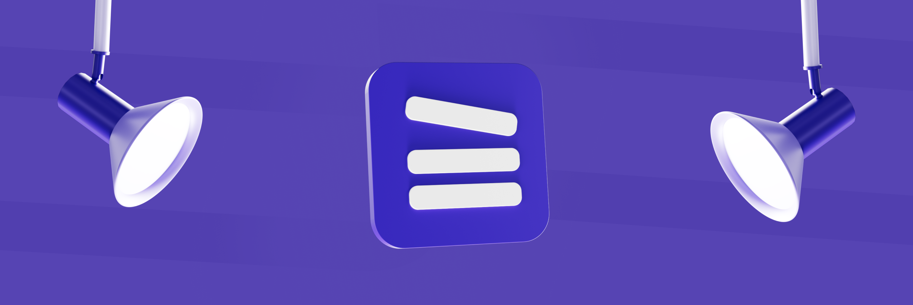
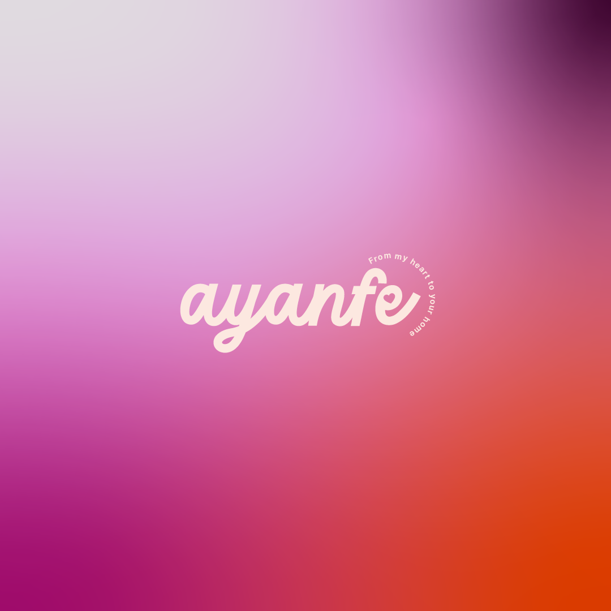
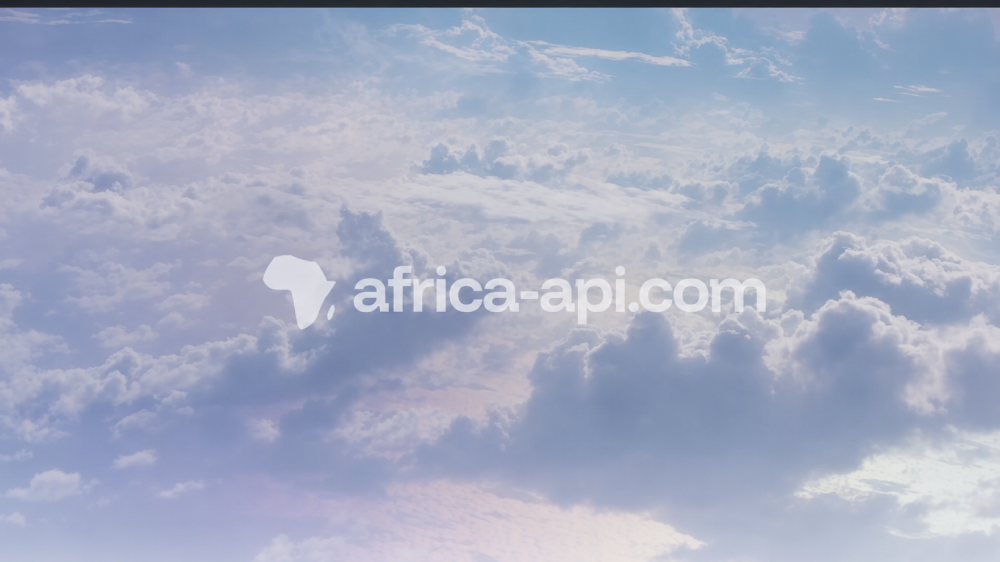
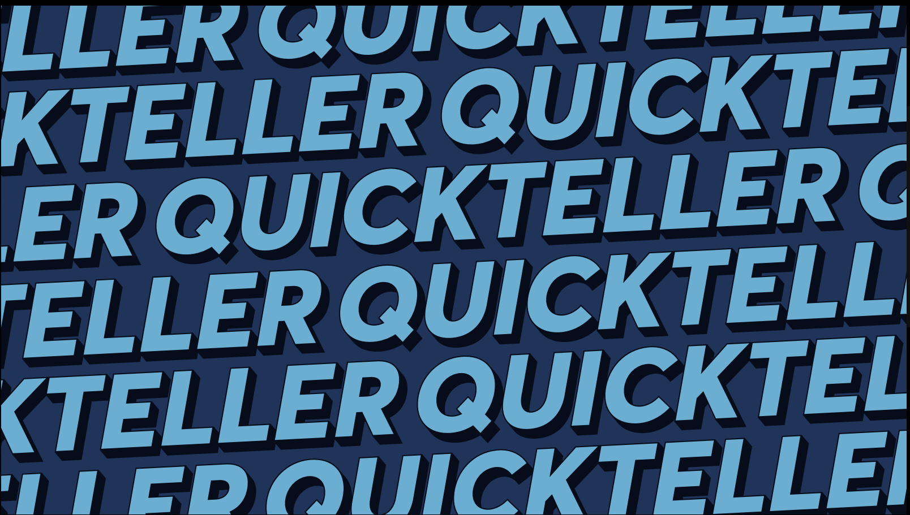

Multidisciplinary creative — I make things move, blink, and breathe.
Multidisciplinary creative — I make things move, blink, and breathe.

Fitness event screen content — Interswitch

Campaign lyric video — Quickteller

3D icon set — Catlog

Product launch — Brass

Graphic design, motion & illustration — Grip

Brand, web design & creative direction

3D product animation — Verve
Social media motion content — Catlog

Launch video — Africa API

3D product animation — Brass

2D animation — Interswitch
Marketing video — Oystack
Motion design system — Verve